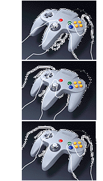

|
 |
ボディとは違い、コントローラのデザインにはコンピュータはあまり使われませんでした。コントローラを握ったときの手のひらや指先の触感は、ゲームプレイに大きく影響す
る大切な部分。ですから、実際にその感触を確かめられるモデルを作り、細かな寸法調整を繰り返しながら、設計を煮詰めていくのが一番だと考えました。
モデル製作には粘土（インダストリアルクレイ）が使用されました。多くの時間を費やして完成させたクレイモデルをひながたに、さらに精度の高いマスターモデルを作成。それをもとに最終的な設計が行なわれました。また、金型の製作にも活用されました。
コントローラをデザインする上で意識したのは、３Ｄスティックを快適に使ってもらうため、スティックと各ボタンをどのようにまとめるか、ということです。そのなかで、いろいろ持ち方を工夫できる、“３グリップ”のあのカタチが生まれてきました。このカタチは安定性も抜群で、たとえばテーブルに置いてジョイスティックのような使い方をしても、グラグラしない設計になっているんです。
コントローラのルックスも、ボディと同じコンセプトでデザインされました。子供が見て、夢や驚きを感じてくれるカタチに仕上がったと思っています。
|